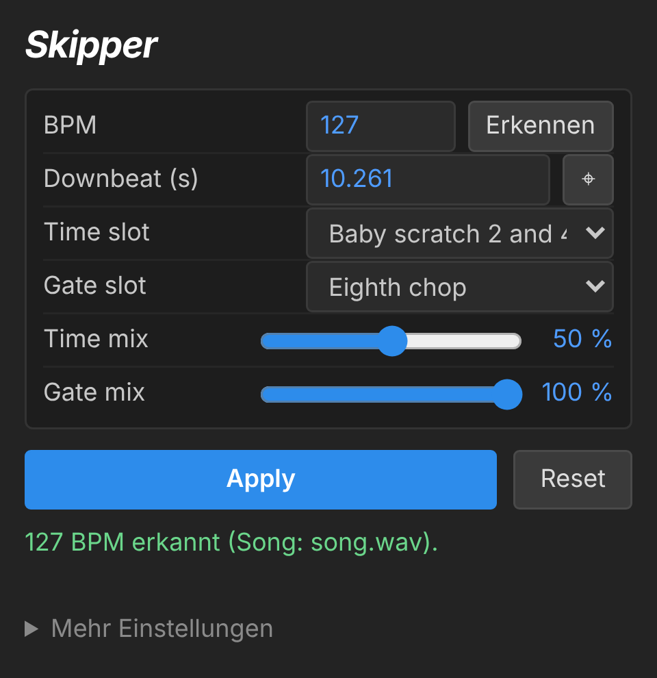

Skipper schneidet deinen Clip im Takt der Musik neu zusammen. Das Bild springt zurück, stottert, läuft rückwärts oder blinkt im Beat.
Du musst dafür nichts von Hand schneiden. Skipper hört sich deinen Song an, findet das Tempo (BPM) selbst und macht den Rest mit einem Klick.
Dein Originalclip bleibt dabei immer erhalten. Gefällt dir etwas nicht, klickst du auf Reset und alles ist wie vorher.
| BPM | Das Tempo deines Songs: Schläge pro Minute. Skipper erkennt es automatisch. |
| Downbeat | Die „1“ im Takt, also der Moment, an dem ein neuer Takt beginnt. |

Vier Schritte. Du brauchst nur diese ZIP-Datei und Premiere Pro.
Doppelklick auf Skipper.zip in deinem Downloads-Ordner. Es entsteht ein Ordner skipper. Lass ihn in „Downloads“ liegen.
Drück ⌘ + Leertaste, tippe Terminal und drück Enter. Ein Fenster mit Text öffnet sich.
Am Ende steht dort „Skipper installiert“. Danach kannst du das Terminal schließen.
Premiere komplett beenden (⌘ + Q) und neu öffnen. Dann im Menü: Fenster → Erweiterungen → Skipper.
Leg den Song auf eine Audiospur und dein Video darüber. Dann:
Klick in der Timeline auf den Videoclip, den du bearbeiten willst.
Skipper hört sich den Song unter dem Clip an und trägt BPM und Downbeat selbst ein.
Time slot legt fest, wie das Bild springt, zum Beispiel „Baby scratch 2 and 4“.
Gate slot legt fest, wann das Bild im Takt kurz ausgeht, zum Beispiel „Eighth chop“.
Fertig. Abspielen und anschauen. Nicht zufrieden? Anderen Effekt wählen, Clip anklicken, noch einmal Apply.
| Regler | Was er macht |
|---|---|
| BPM | Tempo des Songs. Wird mit „Erkennen“ automatisch ausgefüllt. |
| Downbeat (s) | Wo die „1“ im Takt liegt. Mit ⌖ nimmst du die Stelle, an der gerade der Abspielkopf steht. |
| Time slot | Der Zeit-Effekt: wie das Bild springt, stottert oder rückwärts läuft. |
| Gate slot | Der Blink-Effekt: wann das Bild im Takt aus- und angeht. |
| Time mix | In wie vielen Takten der Zeit-Effekt passiert. 100 % = immer, 50 % = jeder zweite Takt. |
| Gate mix | Wie stark das Bild ausgeht. 100 % = ganz schwarz, 50 % = halb dunkel. |
Musst du normalerweise nicht anfassen.
| Link slots | Wählt automatisch einen passenden Gate slot zum Time slot. |
| Gate target | Was blinkt: das Bild, der Ton (markierte Audioclips) oder beides. |
| Gate attack / release | Wie weich das Bild an- und ausgeht, in Frames. Klein = hart, groß = weich. |
| Frame mode | Wie Zeitlupe aussieht: ruckelig (Sampling), weich (Blending) oder ganz flüssig (Optical Flow). |
| Jump dissolve | Kurze Überblendung an jeder Sprungstelle. 0 = harter Schnitt. |
| Time slot | Was passiert |
|---|---|
| Bypass | Nichts, das Video läuft normal. |
| 1/16 stutter, beat 4 | Auf dem 4. Schlag stottert das Bild schnell. |
| Half-speed beat 4 | Der 4. Schlag läuft in Zeitlupe. |
| Previous bar | Der letzte Takt wird wiederholt. |
| Downbeat cascade | Der erste Schlag wiederholt sich immer schneller. |
| Glitch shuffle | Kleine Stücke werden durcheinandergewürfelt. |
| Ping-pong eighths | Vorwärts, rückwärts, vorwärts, rückwärts. |
| Triplet tumble | Hüpft im Dreier-Rhythmus zurück. |
| Baby scratch 2 and 4 | Auf Schlag 2 und 4 vor und zurück wie ein DJ. |
| Stop-motion build | Erst ruckelige Standbilder, dann wieder flüssig. |
| Bar remix | Die Schläge im Takt werden umsortiert. |
| Half-time boomerang | Langsam vorwärts, dann langsam zurück. |
| Rewind and spin-up | Spult zurück und läuft wieder an wie eine Platte. |
| Rubber band | Abwechselnd langsam und schnell, bleibt aber im Takt. |
| Gate slot | Wann das Bild an ist |
|---|---|
| Open | Immer, kein Blinken. |
| Eighth chop / Sixteenth chop | An, aus, an, aus: schnell bzw. sehr schnell. |
| Offbeats | Nur zwischen den Schlägen. |
| Beats 1 and 3 | Nur auf Schlag 1 und 3. |
| Trance A / Trance B | Typischer Club-Rhythmus. |
| Fade out / Fade in bar | Blendet über jeden Takt langsam aus bzw. ein. |